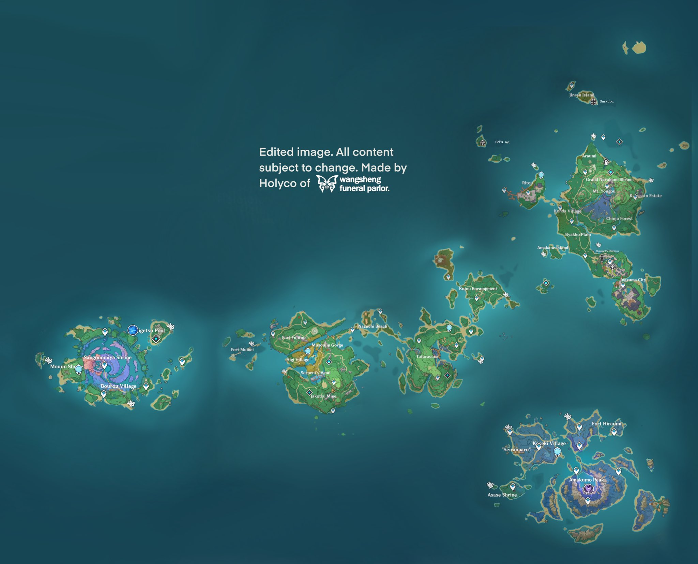

INAZUMA
Ubicación

Inazuma se encuentra aproximadamente a 4 km al sureste del puerto de Liyue y es un vecino cercano del Mar Oscuro. Es un archipiélago aislado en el Lejano Oriente. Supera interminables tormentas eléctricas y pisa las islas de arce rojo y flores de cerezo. En costas sinuosas y acantilados imponentes, y en bosques y montañas llenos de secretos. Es una región que adora al Raiden Shogun , el Electro Arconte , quien también es el líder de su órgano de gobierno, el Shogunato Inazuma . Se caracteriza por estar dividida en diferentes areas.
- Narukami
- Kannazuka
- Yashiori
- Seirai
- Tsurumi
- Watatsumi
- Enkanomiya
Mapa_Interactivo